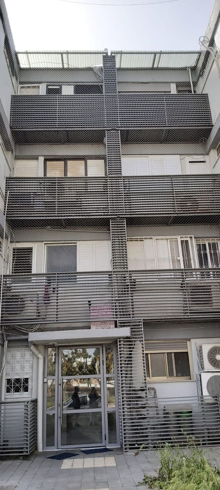
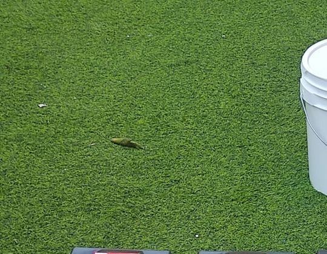
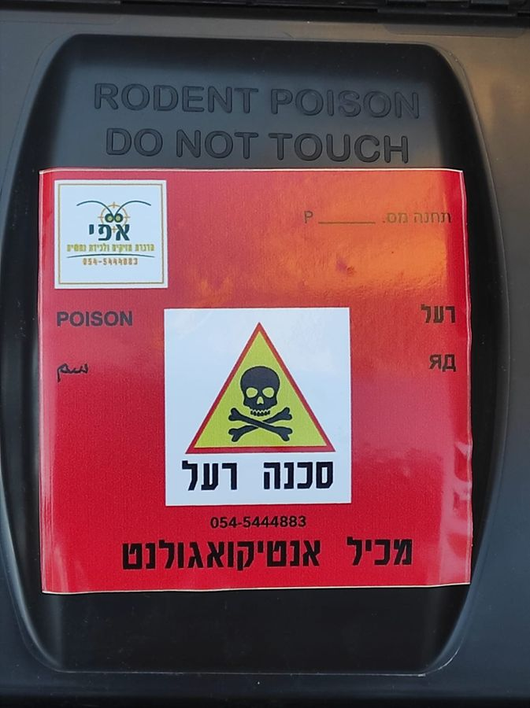

רשתות נגד יוניםPigeon netting
לחזיתות ולמרפסות.For facades and balconies.
קונספט לדוגמה שנבנה עבור אפי הדברה והרחקת יונים – קריות וחיפה · זה אינו האתר הרשמי של העסקA sample concept built for Efi Pest Control & Pigeon Deterrence – Krayot & Haifa · This is not the business’s official website
מהגג ועד הקרקעFrom roof to ground
אפי הדברה והרחקת יונים – קריות וחיפה. רשתות נגד יונים, הדברת מזיקים ותחנות פיתיון, לבניינים ולבתים.Efi Pest Control & Pigeon Deterrence – Krayot & Haifa. Pigeon netting, pest control and bait stations, for buildings and homes.
תמונה מהעבודה של אפיPhoto from Efi’s work

תמונות מהעבודה של אפיPhotos from Efi’s work
עולים לגג בחבלים.Up to the roof on ropes.
לחזיתות ולמרפסות.For facades and balconies.
תחנות פיתיון נעולות סביב הבניין.Locked bait stations around the building.
לבניין כולו או לדירה.For the whole building or one flat.
גם כשהקן בתוך הקיר.Even inside a wall.

גם זה חלק מהעבודה.Part of the job too.
„שנה רביעית שאנחנו מזמינים אותו לבניין וגם לבית פרטי”“This is the fourth year we’ve had him for our building and for a private house”
תווית אזהרה, מספר תחנה וטלפון של אפי על כל אחת.A warning label, a station number and Efi’s phone on each one.

איפה? בחרו בבנייןWhere? Tap the building
אפי היה פשוט מעולה! מאוד מאוד נחמד, עשה עבודה מצויינת במחיר ממש הוגן. התייעצתי איתו על רשת נוספת שהתקנתי בעצמי במרפסת שניה והוא הסביר לי איך אני יכולה לתקן אותה בעצמי במקום לגבות עוד עבור הטיפול שלו. העבודה יצאה ממש נקיה ומסודרת, נראית מעולה. ממליצה בחום!
Efi was simply excellent! Very, very nice, did excellent work at a really fair price. I asked him about another net I had put up myself on a second balcony, and he explained how I could fix it myself instead of charging more for his work. The job came out really clean and tidy, it looks great. Highly recommended!
המלצה חמה מאוד!!! אדם מקצועי, ישר והגון! לפני שקבענו איתו הדברה, היה בקשר טלפוני איתנו ונתן הסברים מה לבדוק בדירה, כדי לדעת מה הבעיה. כשהגיע להדביר את הדירה, הבין שהבעיה היא מבחוץ וצריך להדביר את הבניין ולא את הדירה. גם מנע מאיתנו להכניס חומרים רעילים הביתה וגם לא רצה לקחת כסף על הבדיקה מאחר ולא ביצע את ההדברה.
A very warm recommendation!!! A professional, straight and decent man! Before we booked, he talked to us on the phone and explained what to check in the flat to find the problem. When he came to treat the flat, he understood the problem was outside and the building needed treating, not the flat. He kept toxic materials out of our home and wouldn’t take money for the inspection, since he didn’t do the treatment.
אפי אדם מקצועי, אמין, יסודי. שנה רביעית שאנחנו מזמינים אותו לבניין וגם לבית פרטי. הסכום סביר ביותר וגם לא העלה את הסכום משנה שעברה. התוצאה מספקת ביותר מהרחקה של מקקים וזוחלים ומזיקים אחרים. ממליצה ביותר
Efi is professional, reliable and thorough. This is the fourth year we’ve had him for our building and for a private house. The cost is very reasonable and he didn’t raise it from last year. Very satisfying results keeping away cockroaches, crawlers and other pests. Highly recommend.
הזמנתי את אפי אתמול ואני פשוט חייבת להמליץ! שירות מקצועי, אדיב וסבלני, הסביר לי בדיוק מה הוא עושה ונתן תחושת ביטחון לאורך כל התהליך. הגיע בזמן, עבד בצורה יסודית והשאיר אחריו נקי ומסודר.
I had Efi over yesterday and I simply have to recommend him! Professional, courteous and patient service; he explained exactly what he was doing and gave a sense of confidence throughout. He arrived on time, worked thoroughly and left everything clean and tidy.
אפי הגיע במהרה וטיפל בקן צרעות שהיה בתוך הקיר החיצוני של הדירה בצורה מקצועית וזהירה
Efi came quickly and dealt with a wasp nest inside the flat’s outer wall, professionally and carefully.
כן. בביקורות מספרים שהוא מטפל גם בבניין כולו וגם בבתים פרטיים.Yes. Reviews mention him treating whole buildings as well as private homes.
אפשר להתקשר או לשלוח וואטסאפ ולספר מה ראיתם. לקוחות מספרים שאפי הסביר להם בטלפון מה לבדוק.Call or send a WhatsApp and say what you saw. Customers mention Efi explaining on the phone what to check.
כן. לכידת נחשים כתובה על התווית של אפי, לצד הדברת מזיקים.Yes. Snake catching is printed on Efi’s label, next to pest control.
ראשון עד חמישי 7:00–21:00, שישי 6:00–18:00, ובמוצאי שבת 19:00–23:30.Sunday to Thursday 7:00–21:00, Friday 6:00–18:00, and Saturday evening 19:00–23:30.
בקריות ובחיפה. הכתובת בגוגל: ברק 9, קריית מוצקין.In the Krayot and Haifa. Listed address: 9 Barak St, Kiryat Motzkin.
ברק 9, קרית מוצקין · קריות וחיפה9 Barak St, Kiryat Motzkin · Krayot & Haifa